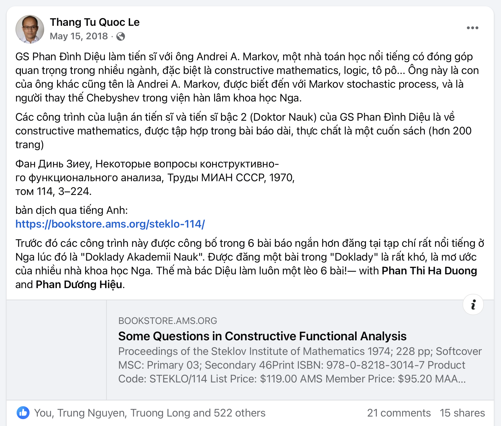
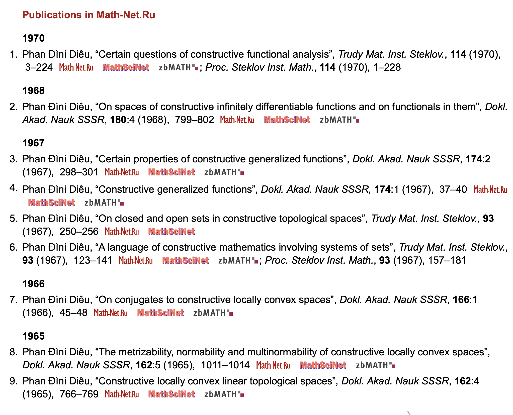

GS Phan Đình Diệu làm tiến sĩ với ông Andrei A. Markov, một nhà toán học nổi tiếng có đóng góp quan trọng trong nhiều ngành, đặc biệt là constructive mathematics, logic, tô pô... Ông này là con của ông khác cũng tên là Andrei A. Markov, được biết đến với Markov stochastic process, và là người thay thế Chebyshev trong viện hàn lâm khoa học Nga.
Các công trình của luận án tiến sĩ và tiến sĩ bậc 2 (Doktor Nauk) của GS Phan Đình Diệu là về constructive mathematics, được tập hợp trong bài báo dài, thực chất là một cuốn sách (hơn 200 trang):
Фан Динь Зиеу, Некоторые вопросы конструктивного функционального анализа, Труды МИАН СССР, 1970, том 114, 3–224.
Bản dịch sang tiếng Anh: https://bookstore.ams.org/steklo-114/
Trước đó các công trình này được công bố trong 6 bài báo ngắn hơn đăng tại tạp chí rất nổi tiếng ở Nga lúc đó là Doklady Akademii Nauk. Được đăng một bài trong Doklady là rất khó, là mơ ước của nhiều nhà khoa học Nga. Thế mà bác Diệu làm luôn một lèo 6 bài!
